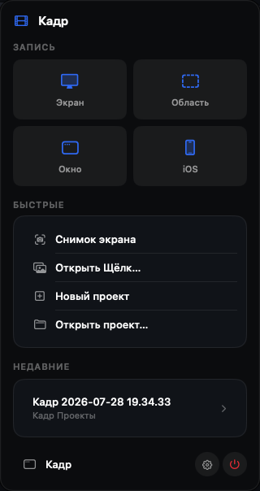

Щёлк.Кадр
Скриншоты и запись экрана для Mac в одном приложении. Несколько окон — в одном кадре.

Скриншоты и запись экрана для Mac в одном приложении. Несколько окон — в одном кадре.
Щёлк — снимки и пометки. Кадр — запись и сборка ролика. Без прыжков между программами.
Запись экрана
Запишите приложение рядом с браузером, терминалом или телефоном. Сравнение и демо — без склейки в другом монтажёре.

Добавьте окна, посмотрите черновик кадра и только тогда жмите старт.

Экран iPhone рядом с Mac — один туториал, одна запись.
Лицо поверх экрана: веб-камера или Continuity Camera, без отдельной склейки.
Монтаж
После записи двигайте, режьте и масштабируйте источники по одному. Полный контроль над раскладкой.
Микрофон, звук системы и музыка — громкость и mute по отдельности. Зритель слышит то, что нужно.

Подрежьте паузы, ускорьте скучное. Монтаж записи экрана без тяжёлого редактора.
Кликнули — зум уже на шкале. Зритель сразу видит, куда смотреть.
Плавный путь и акцент на клик. Демо выглядит дороже сырой записи.
Подсветите жест или кнопку после съёмки — без перезаписи.
Спрячьте пароли и личные данные прямо в ролике перед отправкой.
Вид и исход
Поля, скругления, тень — запись экрана выглядит как презентация, не как сырой захват.
MacBook, iPhone, iPad вокруг кадра — ролик сразу «для ленты».
Зритель видит шорткаты во время туториала — меньше текста в голосе.

Текст речи на Mac, без облака. Удобно смотреть без звука.
16:9, 1:1 или 9:16 — один проект, разные площадки.
MP4 или GIF — отправьте коллегам или выложите. Без долгой возни с настройками.
Щёлк.Кадр для Mac — скриншоты и запись экрана в одном приложении.
Скриншоты
Область, окно или весь экран — быстрые скриншоты Mac без лишних шагов.

Стрелки, текст, спотлайт, пиксели — туториал на кадре без Photoshop.
Прокрутите сайт или настройки один раз — получите полный скриншот.
Скопируйте текст или код с картинки. Всё локально на Mac.
Закрепите кадр как референс — виден на любом рабочем столе.
Обои, цвет или свой фон — снимок окна как карточка для презентации.
Приложение
Одно приложение для скриншотов и записи экрана на Mac.
Щёлк, Кадр, клавиши и версия — без прыжков по окнам.
Новая версия из приложения; можно скачать и с сайта.
Щёлк и Кадр в одном приложении — без прыжков между программами.
Одно окно: общие параметры, Щёлк, Кадр, клавиши и версия.
Проверка новых версий прямо из приложения. Можно скачать и с сайта.
Сейчас доступна бета. Стабильная версия появится позже.